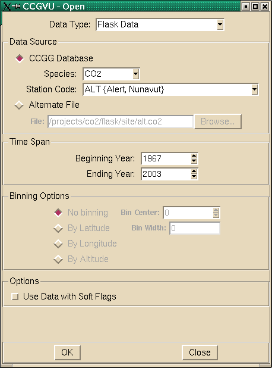

Open [File Menu]

The Open Menu is for accessing data from the CCGG database or
from text files in standard formats.
The following are the options of the Open dialog box:
-
Data Type
This is a combination entry box that allows you to choose the
type of data to access. Data types are:
- Flask Data
- Binned Shipboard Flask Data
- Binned Aircraft Flask Data
- In-Situ Daily Average Data
- In-Situ Hourly Monthly Average Data
- In-Situ Hourly Average Data
-
CCGG Database
This is a radio button (along with 'Alternate File' button) that
the user selects if data is to be obtained from the database.
If selected, the following options are available:
-
Species
This is a combobox menu showing the available species.
The current selection is shown. Either select a species
from the menu, or type in the species in the entry box.
-
Station code
This is a combination entry box where the three-letter
station code is entered. You can either type in the
desired station code, or select from the list of codes
that is available after pressing the arrow button next
to the entry box.
-
Alternate File
This button allows the user to obtain data that is in a flask
file format, but not located in the standard directory. If
this option is chosen, then the following options are available:
-
File
The user enters the file name in the text box.
-
Browse...
The user can browse through the files system after
pressing this button and select the input file.
-
Begining year
This is a text entry box where the first year of data
is entered. You can either type in the
desired year, or to change the year by pressing either
of the arrow buttons next to the entry box.
-
Ending year
This is a text entry box where the last year of data
is entered. You can either type in the
desired year, or to change the year by pressing either
of the arrow buttons next to the entry box.
-
Binning Options
This section allows the user to change the parameters for
binning data. These options are not available for flask
or in-situ data types. Default values for the bin center
and bin width will be placed in the boxes for each site.
The user can modify these if needed.
Data that falls within the bin center
+/- 1/2 the bin width will be displayed.
Use data with soft flags
This check button allows data that has a "soft" flag to
be included. A "soft" flag is a flag that designates
a value that may not represent strictly baseline conditions.
Action buttons:
-
OK
Gets the selected data, calculates the curve fits,
plots the results.
-
Close
Close: Dismisses the dialog box and takes no action.